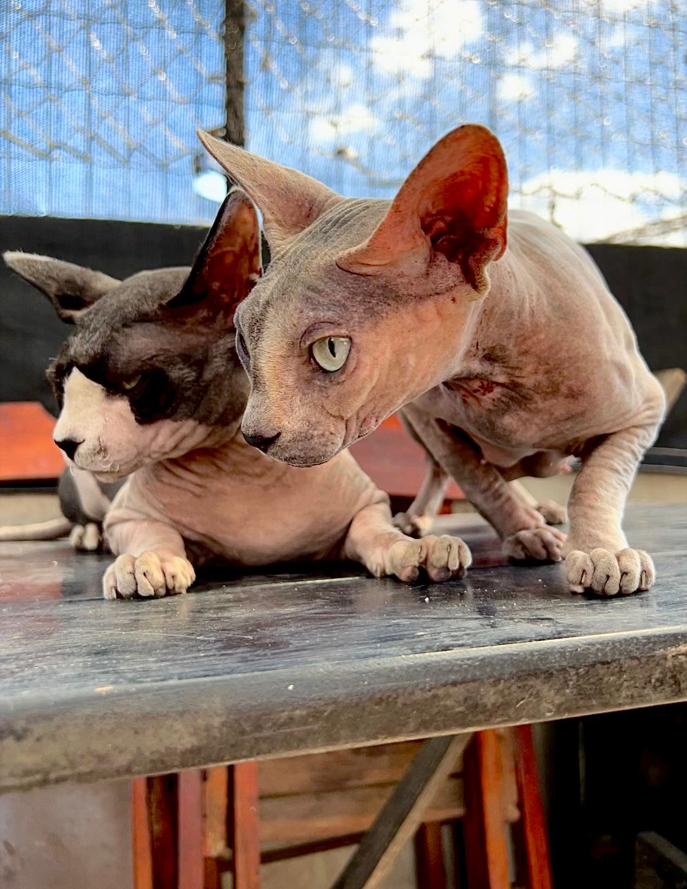

Bem-vindo ao lar dos pelados!
Descubra o encanto dos gatos Sphynx...
Nossos primeiros Sphynx
Anakin & Halsey
Nossos Serviços
- Venda de filhotes Sphynx
- Consultoria em cuidados com gatos sem pelos
- Serviços de saúde e bem-estar para gatos Sphynx
Sobre Nós
Bem-vindo ao Bastet Felix, um gatil dedicado à criação responsável e amorosa de gatos da raça Sphynx. Localizado em um ambiente acolhedor e familiar, nosso objetivo é proporcionar aos nossos felinos o melhor cuidado possível, garantindo que cada filhote cresça saudável, feliz e bem socializado.
Nossa História
Desde a infância, os felinos fazem parte da minha vida. Sempre existiu em mim um amor genuíno pelos animais, principalmente pelos gatos, que cresceu ao longo dos anos através de resgates, cuidados, dedicação e muito carinho. Cada vida que passou por minhas mãos reforçou ainda mais a certeza de que cuidar é um dom, uma missão que carrego comigo desde sempre. Por muito tempo, acompanhei pela internet uma raça que despertava algo diferente no meu coração. Mesmo sem nunca ter convivido de perto com ela, eu já sentia uma conexão especial. Lia sobre seu comportamento, suas características, sua personalidade encantadora… e tudo o que diziam só aumentava meu desejo. Até que um dia, ouvi o que o coração já vinha dizendo há muito tempo: é essa a raça que eu quero criar. Quando finalmente pude conviver com ela de perto, tive a certeza de que todas as expectativas eram pequenas diante da realidade. O temperamento doce, a beleza singular e a forma de se relacionar com as pessoas superaram tudo o que eu imaginava. Movida por esse amor e pelo compromisso com o bem-estar animal, decidi seguir também o caminho da Medicina Veterinária, para estar cada vez mais próxima dos cuidados, da saúde e da qualidade de vida dos meus gatos. Meu propósito sempre foi claro: criar com responsabilidade, respeito, amor e conhecimento. Hoje, o meu gatil nasce desse sonho construído ao longo de toda uma vida. Aqui, cada gato é tratado como parte da família. Nosso trabalho é guiado pelo amor, pelo cuidado individual, pela busca da melhor genética, da melhor saúde e, acima de tudo, pelo compromisso de entregar às famílias não apenas um filhote, mas um companheiro de vida criado com ética, carinho e responsabilidade.